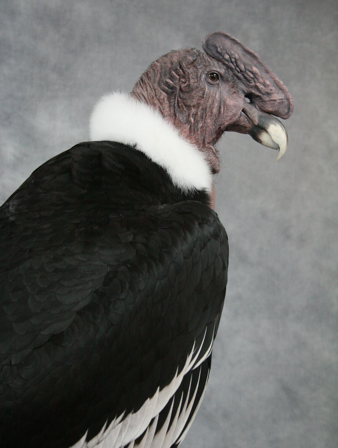
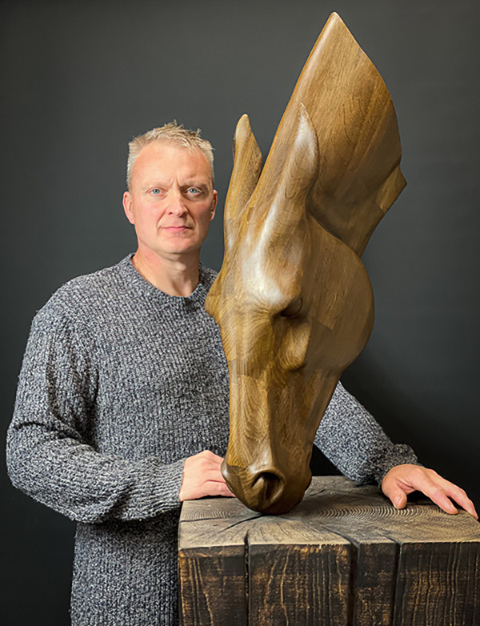

North Yorkshire, England
Bird taxidermy & sculpture, held in museums and private collections worldwide.
Carl Church is an international award-winning bird taxidermist and an established sculptor with over 26 years' experience — from a National History Museum commission to a published manual that's taught a new generation of taxidermists.

26+
Years self-employed as an artist
2×
World Taxidermy Show — Best Professional Bird
6,000+
Copies sold of his bird taxidermy manual
1
Qualified UK Guild of Taxidermists specialist, since 2002

About Carl
A career built across taxidermy, sculpture and film.
Carl qualified as a bird specialist with the UK Guild of Taxidermists in 2002, and has spent the years since building a reputation that stretches from small private collections to national museums.
- 2003 & 2005 — Best Professional Bird at the World Taxidermy Show, America, plus Best Competitors award in 2005.
- National History Museum of California — taxidermy work held in the permanent collection, alongside specimens in major European collections.
- 2008 — began sculpting special-effects work for the film industry and leading UK advertising agencies.
- Kendal Museum, Cumbria — five dodo recreations, exhibited with three of the world's leading dodo experts, earning national recognition.
- 2012 — appeared on Channel 4's Four Rooms with a cased Andean condor.
- 2013 — published Bird Taxidermy: The Basic Manual, now sold worldwide.
- Since 2023 — working with Tennants Auctioneers of Leyburn.
A glimpse of the work
Taxidermy, sculpture, and museum-grade craft.
Interested in commissioning a piece?
Small or large, taxidermy or sculpture — get in touch to discuss a commission.